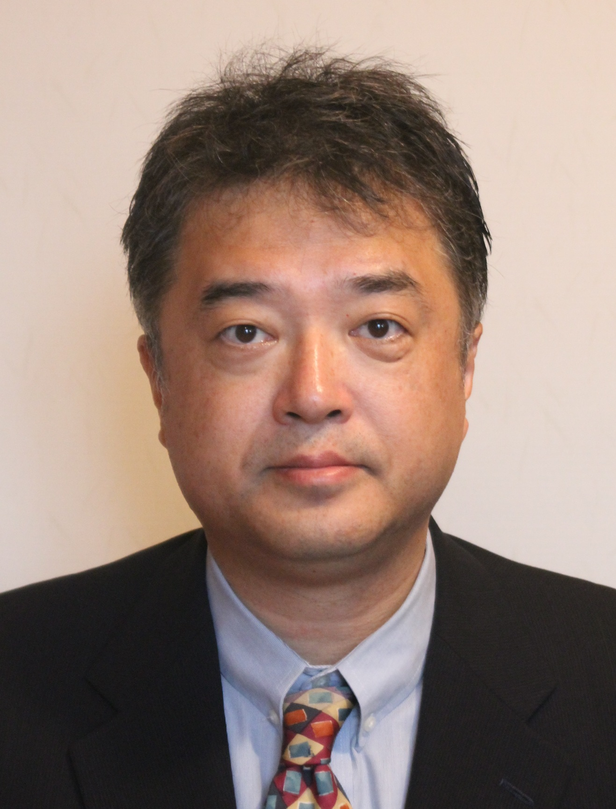
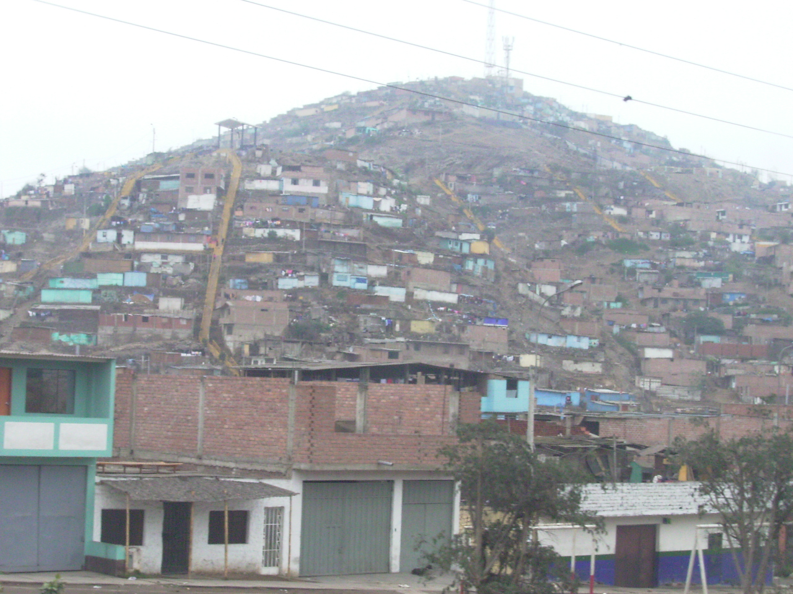
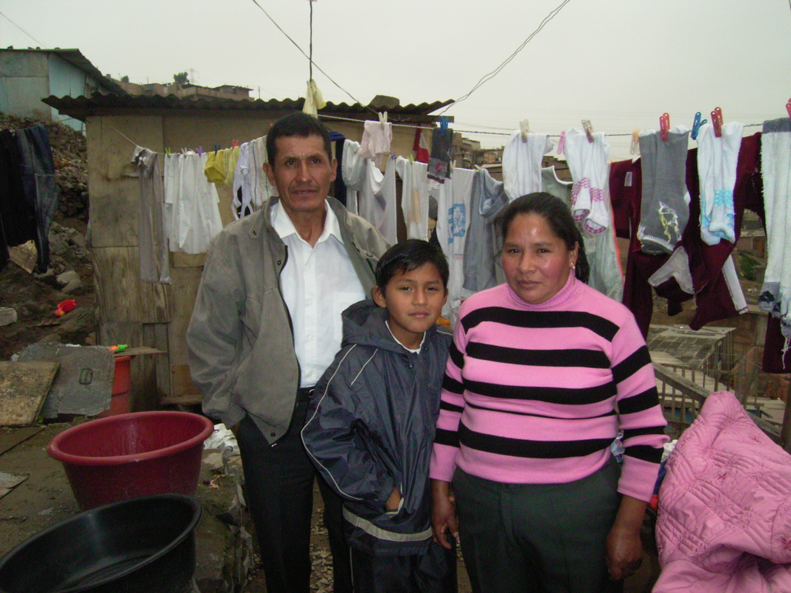
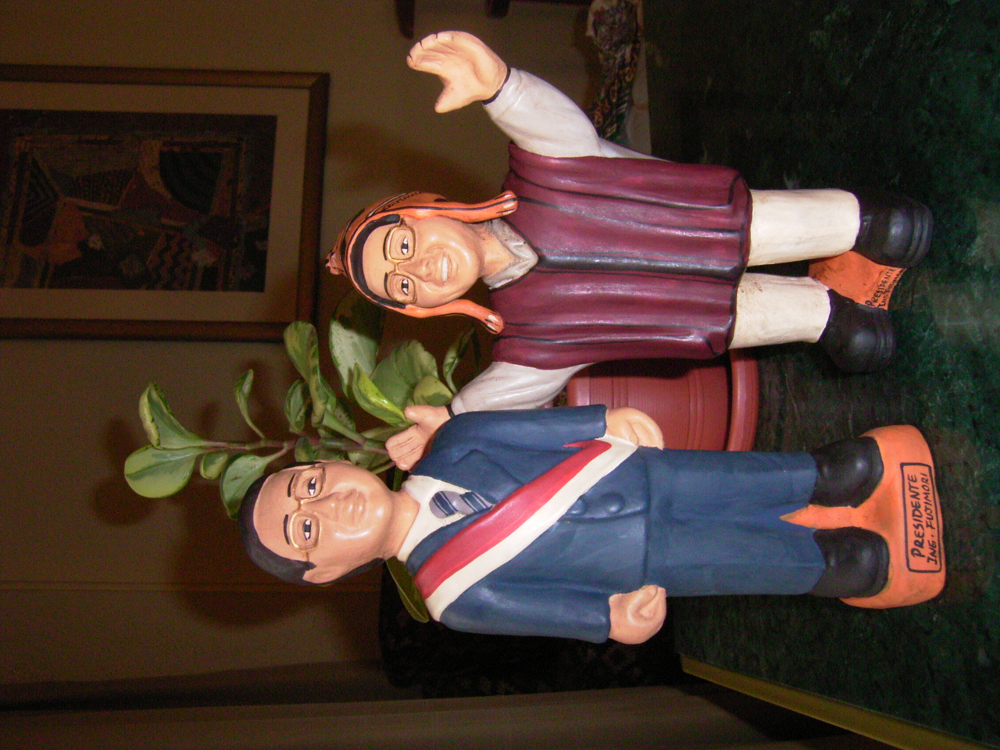

フジモリの牙城を訪ねる

７月、チリ・サンティアゴで蟄居を続けるフジモリ元ペルー大統領に日本の参院選出馬の動機を尋ねたことがある。はかばかしい答えは帰ってこなかった。
大方の日本の有権者の受け止め方も同じようなものだったのだろう。フジモリ元大統領はさほどの話題にも上らず、当然のように落選した。
アルベルト・フジモリはもはや過去の人である―。そう思っていたから、７年ぶりに帰国した元大統領を追って訪れたペルーの首都リマで、左派系有力紙「レプブリカ」のマリオ・ムニーベ論説委員が「もしフジモリ元大統領が２０１１年の次期大統領選に出馬することができたら、当選するのは間違いない」と話すのを聞いて、やや当惑した。
「過去の人どころじゃない。ペルーでは元気すぎるほどだ」。ムニーベ氏は真顔で言う。ちなみに、レプブリカ紙は「反フジモリ」の立場であり、ムニーベ氏は「フジモリは許せない」という。だからこそ、その言葉には説得力がある。
なお半信半疑でリマ郊外のスラムに向かった。フジモリ元大統領の中心的な支持層は、貧困層である。彼らの支持は熱狂的といえるほどだった。１０人ほどに話を聞き、「話したくない」と答えた１人をのぞいて、全員が支持を公言した。

南米を訪れていつも感じるのは、富める少数と貧しい多数の強烈な対照である。
世界のほかの場所、たとえば米国に格差がないわけではない。しかし、たとえ建前にすぎないにせよ米国には、富は不断に流動し機会は誰にでも開かれている、という共通認識がある。
ラテンアメリカでは、そうではない。さほど大きくはない富をめぐって不平等な配分比率が合理的な説明のないまま固定され、貧困層は明日を信じることができない。逆に南米の富裕層ほど、明日も豊かであり続けることを楽天的に信じる人々も少ない。
リマもまた、そういった強烈なコントラストに彩られた都市である。そこでフジモリ元大統領が依然、高い支持を集めているという事実は興味深かった。
昨年、多くの中南米の国で大統領選が行われ、ベネズエラのチャベス大統領をはじめ次々と左派系候補が当選した。中南米の「左旋回」と評されたこの現象を、欧米のメディアはこぞって「１９９０年代の新自由主義（ネオ・リベラリスモ）政策の破綻による社会主義への回帰」と分析した。
ペルーでの左派系候補の善戦も「左旋回」の一例とされた。しかし、左右の分類にはなじまないフジモリ元大統領が失脚から７年を経てなおこれほど高い支持を集めている状況をみると、「左旋回」という切り口はやや皮相に映る。
「南米の政治において、左右のイデオロギーなど実際には意味を持ったことはないし、今も持っていない」というのは、フジモリ派の重鎮で、大統領選に同派統一候補として出馬したマリア・チャベス氏の説明だ。南米で名を残す指導者に共通するのは、強烈なカリスマ性と実行力、そしてなにより、アウトサイダーとしての出自だという。
不安定な南米社会は、指導者を継続的に生み出すことができる成熟した政治活動を許容するほどの余裕がない。結果的に既存の政治構造の外側から現れ、ポピュリスト（大衆迎合主義者）的と批判されようが急進的かつ現実的な改革を進めるカリスマが歓迎される。農業大学長として登場し、無名候補から一気に権力の座に駆け上がったフジモリ元大統領も、まさしくその系譜に当てはまる。
問題は、そういったカリスマ指導者は、その出自からして必然的に独裁への道をたどることが多いことだ。フジモリ元大統領も例外ではない。
今回の引き渡し劇を伝える欧米メディアには特徴的な論調が目についた。国際人権団体ヒューマンライツ・ウオッチの談話を引用する形で、引き渡しを「元国家元首が他国から司法手続きによって自国に引き渡された初めてのケース」と称揚するものだ。
だが、貧困にあえぐスラムの住民が人権侵害の独裁者とレッテルを貼られたフジモリ元大統領を今も待望することもまた、事実なのである。

民主主義や人権を否定するわけではない。しかし南米の風土はしばしばその枠からはみ出した人物を呼び出し、英雄として腕をふるわせ、最後には独裁者として芳しくない末路を用意してきた。
それこそが、「左旋回」などよりはるかに根源的なラテンアメリカの主調音なのではないか。そして、少しばかり気が早いにせよ、延々と繰り返されるその歴史の主役の一人として日本人の血を引く男が登場したことに、われわれはやはり幾ばくかの関心を寄せてもよいと思うのである。（松尾理也）